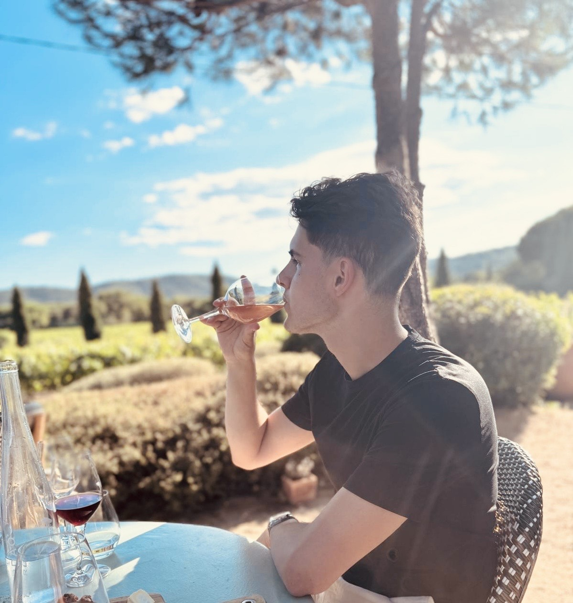

Wie ben ik?
Mijn naam is Teun Hanssen en ik ben student Software Engineering aan De Haagse Hogeschool. Ik ben geïnteresseerd in softwareontwikkeling, webdevelopment, databases en cybersecurity.
Binnen mijn opleiding werk ik aan verschillende projecten waarin ik leer hoe software wordt ontworpen, ontwikkeld en onderhouden. Hierbij probeer ik niet alleen te leren hoe iets werkt, maar ook waarom bepaalde keuzes binnen softwareontwikkeling worden gemaakt.
